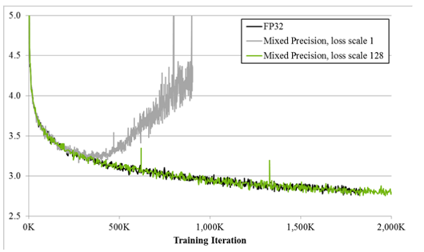
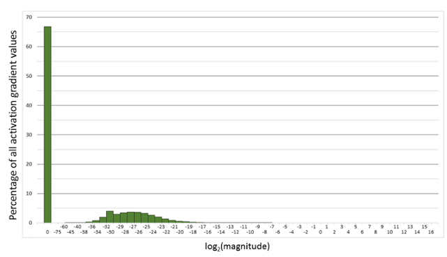
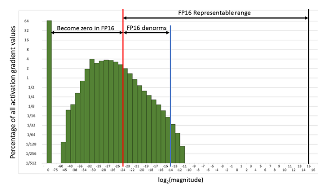

损失缩放¶
Ascend GPU 模型调优
感谢：ZOMI酱 提供编辑


概述¶
损失缩放（Loss Scale）技术主要是作用于混合精度训练的过程当中。
在混合精度训练的过程中，会使用FP16类型来替代FP32类型进行数据存储，从而达到减少内存和提高计算速度的效果。但是由于FP16类型要比FP32类型表示的范围小很多，所以当参数（如梯度）在训练过程中变得很小时，就会发生数据下溢的情况。而Loss Scale损失缩放，正是为了解决FP16类型数据下溢问题而提出的。
其主要思想是在计算损失值loss的时候，将loss扩大一定的倍数。由于链式法则的存在，梯度也会相应扩大，然后在优化器更新权重时再缩小相应的倍数，从而避免了数据下溢的情况又不影响计算结果。
MindSpore中提供了两种Loss Scale的方式，分别是FixedLossScaleManager和DynamicLossScaleManager，需要和Model配合使用。在使用Model构建模型时，可配置混合精度策略amp_level和Loss Scale方式loss_scale_manager。
使用FP16训练问题¶
首先来看看为什么需要混合精度。使用FP16训练神经网络，相对比使用FP32带来的优点有：
减少内存占用：FP16的位宽是FP32的一半，因此权重等参数所占用的内存也是原来的一半，节省下来的内存可以放更大的网络模型或者使用更多的数据进行训练。
加快通讯效率：针对分布式训练，特别是在大模型训练的过程中，通讯的开销制约了网络模型训练的整体性能，通讯的位宽少了意味着可以提升通讯性能，减少等待时间，加快数据的流通。
计算效率更高：在特殊的AI加速芯片如华为Ascend 910和310系列，或者NVIDIA VOLTA架构的Titan V and Tesla V100的GPU上，使用FP16的执行运算性能比FP32更加快。
但是使用FP16同样会带来一些问题，其中最重要的是精度溢出和舍入误差，Loss Scale就是为了解决精度溢出而提出的。
损失缩放原理¶
如图所示，如果仅仅使用FP32训练，模型收敛得比较好，但是如果用了混合精度训练，会存在网络模型无法收敛的情况。原因是梯度的值太小，使用FP16表示会造成了数据下溢出（Underflow）的问题，导致模型不收敛，如图中灰色的部分。于是需要引入损失缩放（Loss Scale）技术。

下面是在网络模型训练阶段， 某一层的激活函数梯度分布式中，其中有68%的网络模型激活参数位0，另外有4%的精度在\(2^{-32},2^{-20}\)这个区间内，直接使用FP16对这里面的数据进行表示，会截断下溢的数据，所有的梯度值都会变为0。

为了解决梯度过小数据下溢的问题，对前向计算出来的Loss值进行放大操作，也就是把FP32的参数乘以某一个因子系数后，把可能溢出的小数位数据往前移，平移到FP16能表示的数据范围内。根据链式求导法则，放大Loss后会作用在反向传播的每一层梯度，这样比在每一层梯度上进行放大更加高效。

损失放大是需要结合混合精度实现的，其主要的主要思路是：
Scale up阶段：网络模型前向计算后在反响传播前，将得到的损失变化值DLoss增大\(2^K\)倍。
Scale down阶段：反向传播后，将权重梯度缩\(2^K\)倍，恢复FP32值进行存储。
动态损失缩放（Dynamic Loss Scale）：上面提到的损失缩放都是使用一个默认值对损失值进行缩放，为了充分利用FP16的动态范围，可以更好地缓解舍入误差，尽量使用比较大的放大倍数。总结动态损失缩放算法，就是每当梯度溢出时候减少损失缩放规模，并且间歇性地尝试增加损失规模，从而实现在不引起溢出的情况下使用最高损失缩放因子，更好地恢复精度。
动态损失缩放的算法如下：
动态损失缩放的算法会从比较高的缩放因子开始（如\(2^{24}\)），然后开始进行训练，并在迭代中检查数是否会溢出（Infs/Nans）；
如果没有梯度溢出，则不调整缩放因子，继续进行迭代；如果检测到梯度溢出，则缩放因子会减半，重新确认梯度更新情况，直到参数不出现在溢出的范围内；
在训练的后期，loss已经趋近收敛稳定，梯度更新的幅度往往小了，这个时候可以允许更高的损失缩放因子来再次防止数据下溢。
因此，动态损失缩放算法会尝试在每N（N=2000）次迭代将损失缩放增加F倍数，然后执行步骤2检查是否溢出。
MindSpore中使用损失缩放¶
下面将会分别介绍MindSpore中，使用损失缩放算法的主要两个API FixedLossScaleManager和DynamicLossScaleManager。
FixedLossScaleManager¶
FixedLossScaleManager在进行缩放的时候，不会改变scale的大小，scale的值由入参loss_scale控制，可以由用户指定，不指定则取默认值。
FixedLossScaleManager的另一个参数是drop_overflow_update，用来控制发生溢出时是否更新参数。
一般情况下LossScale功能不需要和优化器配合使用，但使用FixedLossScaleManager时，如果drop_overflow_update为False，那么优化器需设置loss_scale的值，且loss_scale的值要与FixedLossScaleManager的相同。
FixedLossScaleManager具体用法如下：
import必要的库，并声明使用图模式下执行。
[1]:
import numpy as np
import mindspore
import mindspore.nn as nn
from mindspore.nn import Accuracy
from mindspore import context, Model, FixedLossScaleManager, DynamicLossScaleManager, Tensor
from mindspore.train.callback import LossMonitor
from mindspore.common.initializer import Normal
from mindspore import dataset as ds
mindspore.set_seed(0)
context.set_context(mode=context.GRAPH_MODE)
定义LeNet5网络模型，任何网络模型都可以使用Loss Scale机制。
[2]:
class LeNet5(nn.Cell):
"""
Lenet network
Args:
num_class (int): Number of classes. Default: 10.
num_channel (int): Number of channels. Default: 1.
Returns:
Tensor, output tensor
"""
def __init__(self, num_class=10, num_channel=1):
super(LeNet5, self).__init__()
self.conv1 = nn.Conv2d(num_channel, 6, 5, pad_mode='valid')
self.conv2 = nn.Conv2d(6, 16, 5, pad_mode='valid')
self.fc1 = nn.Dense(16 * 5 * 5, 120, weight_init=Normal(0.02))
self.fc2 = nn.Dense(120, 84, weight_init=Normal(0.02))
self.fc3 = nn.Dense(84, num_class, weight_init=Normal(0.02))
self.relu = nn.ReLU()
self.max_pool2d = nn.MaxPool2d(kernel_size=2, stride=2)
self.flatten = nn.Flatten()
def construct(self, x):
x = self.max_pool2d(self.relu(self.conv1(x)))
x = self.max_pool2d(self.relu(self.conv2(x)))
x = self.flatten(x)
x = self.relu(self.fc1(x))
x = self.relu(self.fc2(x))
x = self.fc3(x)
return x
定义数据集和训练流程中常用的接口。
[3]:
# create dataset
def get_data(num, img_size=(1, 32, 32), num_classes=10, is_onehot=True):
for _ in range(num):
img = np.random.randn(*img_size)
target = np.random.randint(0, num_classes)
target_ret = np.array([target]).astype(np.float32)
if is_onehot:
target_onehot = np.zeros(shape=(num_classes,))
target_onehot[target] = 1
target_ret = target_onehot.astype(np.float32)
yield img.astype(np.float32), target_ret
def create_dataset(num_data=1024, batch_size=32, repeat_size=1):
input_data = ds.GeneratorDataset(list(get_data(num_data)), column_names=['data', 'label'])
input_data = input_data.batch(batch_size, drop_remainder=True)
input_data = input_data.repeat(repeat_size)
return input_data
ds_train = create_dataset()
# Initialize network
network = LeNet5(10)
# Define Loss and Optimizer
net_loss = nn.SoftmaxCrossEntropyWithLogits(reduction="mean")
真正使用Loss Scale的API接口，作用于优化器和模型中。
[4]:
# Define Loss Scale, optimizer and model
#1) Drop the parameter update if there is an overflow
loss_scale_manager = FixedLossScaleManager()
net_opt = nn.Momentum(network.trainable_params(), learning_rate=0.01, momentum=0.9)
model = Model(network, net_loss, net_opt, metrics={"Accuracy": Accuracy()}, amp_level="O0", loss_scale_manager=loss_scale_manager)
#2) Execute parameter update even if overflow occurs
loss_scale = 1024.0
loss_scale_manager = FixedLossScaleManager(loss_scale, False)
net_opt = nn.Momentum(network.trainable_params(), learning_rate=0.01, momentum=0.9, loss_scale=loss_scale)
model = Model(network, net_loss, net_opt, metrics={"Accuracy": Accuracy()}, amp_level="O0", loss_scale_manager=loss_scale_manager)
# Run training
model.train(epoch=10, train_dataset=ds_train, callbacks=[LossMonitor()])
epoch: 1 step: 32, loss is 2.3018966
epoch: 2 step: 32, loss is 2.2965345
epoch: 3 step: 32, loss is 2.3021417
epoch: 4 step: 32, loss is 2.2995133
epoch: 5 step: 32, loss is 2.3040886
epoch: 6 step: 32, loss is 2.3131478
epoch: 7 step: 32, loss is 2.2919555
epoch: 8 step: 32, loss is 2.311748
epoch: 9 step: 32, loss is 2.304955
epoch: 10 step: 32, loss is 2.2682834
LossScale与优化器¶
前面提到了使用FixedLossScaleManager且drop_overflow_update为False时，优化器需要配合使用。
这是由于采用此方式进行配置时，梯度与loss_scale系数之间的除法运算在优化器中进行。优化器设置与FixedLossScaleManager相同的loss_scale，训练结果才是正确的。
后续MindSpore会优化不同场景下溢出检测功能的用法，并逐步移除优化器中的
loss_scale参数，到时便无需配置优化器的loss_scale参数。
需要注意的是，当前MindSpore提供的部分优化器如AdamWeightDecay，未提供loss_scale参数。如果使用FixedLossScaleManager，且drop_overflow_update配置为False，优化器中未能进行梯度与loss_scale之间的除法运算，此时需要自定义TrainOneStepCell，并在其中对梯度除loss_scale，以使最终的计算结果正确，定义方式如下：
[5]:
import mindspore
from mindspore import nn, ops, Tensor
grad_scale = ops.MultitypeFuncGraph("grad_scale")
@grad_scale.register("Tensor", "Tensor")
def gradient_scale(scale, grad):
return grad * ops.cast(scale, ops.dtype(grad))
class CustomTrainOneStepCell(nn.TrainOneStepCell):
def __init__(self, network, optimizer, sens=1.0):
super(CustomTrainOneStepCell, self).__init__(network, optimizer, sens)
self.hyper_map = ops.HyperMap()
self.reciprocal_sense = Tensor(1 / sens, mindspore.float32)
def scale_grad(self, gradients):
gradients = self.hyper_map(ops.partial(grad_scale, self.reciprocal_sense), gradients)
return gradients
def construct(self, *inputs):
loss = self.network(*inputs)
sens = ops.fill(loss.dtype, loss.shape, self.sens)
# calculate gradients, the sens will equal to the loss_scale
grads = self.grad(self.network, self.weights)(*inputs, sens)
# gradients / loss_scale
grads = self.scale_grad(grads)
# reduce gradients in distributed scenarios
grads = self.grad_reducer(grads)
loss = ops.depend(loss, self.optimizer(grads))
return loss
network：参与训练的网络，该网络包含前向网络和损失函数的计算逻辑，输入数据和标签，输出损失函数值。
optimizer：所使用的优化器。
sens：参数用于接收用户指定的
loss_scale，训练过程中梯度值会放大loss_scale倍。scale_grad函数：用于梯度与
loss_scale系数之间的除法运算，还原梯度。construct函数：参照
nn.TrainOneStepCell定义construct的计算逻辑，并在获取梯度后调用scale_grad。
自定义TrainOneStepCell后，需要手动构建训练网络，如下:
[6]:
from mindspore import nn, FixedLossScaleManager
network = LeNet5(10)
# Define Loss and Optimizer
net_loss = nn.SoftmaxCrossEntropyWithLogits(reduction="mean")
net_opt = nn.AdamWeightDecay(network.trainable_params(), learning_rate=0.01)
# Define LossScaleManager
loss_scale = 1024.0
loss_scale_manager = FixedLossScaleManager(loss_scale, False)
# Build train network
net_with_loss = nn.WithLossCell(network, net_loss)
net_with_train = CustomTrainOneStepCell(net_with_loss, net_opt, loss_scale)
构建训练网络后可以直接运行或通过Model运行：
[7]:
epochs = 2
#1) Execute net_with_train
ds_train = create_dataset()
for epoch in range(epochs):
for d in ds_train.create_dict_iterator():
result = net_with_train(d["data"], d["label"])
#2) Define Model and run
model = Model(net_with_train)
ds_train = create_dataset()
model.train(epoch=epochs, train_dataset=ds_train)
在此场景下使用Model进行训练时，loss_scale_manager和amp_level无需配置，因为CustomTrainOneStepCell中已经包含了混合精度的计算逻辑。
DynamicLossScaleManager¶
DynamicLossScaleManager在训练过程中可以动态改变scale的大小，在没有发生溢出的情况下，要尽可能保持较大的scale。
DynamicLossScaleManager会首先将scale设置为一个初始值，该值由入参init_loss_scale控制。
在训练过程中，如果不发生溢出，在更新scale_window次参数后，会尝试扩大scale的值，如果发生了溢出，则跳过参数更新，并缩小scale的值，入参scale_factor是控制扩大或缩小的步数，scale_window控制没有发生溢出时，最大的连续更新步数。
具体用法如下，仅需将FixedLossScaleManager样例中定义LossScale，优化器和模型部分的代码改成如下代码：
[8]:
# Define Loss Scale, optimizer and model
scale_factor = 4
scale_window = 3000
loss_scale_manager = DynamicLossScaleManager(scale_factor, scale_window)
net_opt = nn.Momentum(network.trainable_params(), learning_rate=0.01, momentum=0.9)
model = Model(network, net_loss, net_opt, metrics={"Accuracy": Accuracy()}, amp_level="O0", loss_scale_manager=loss_scale_manager)